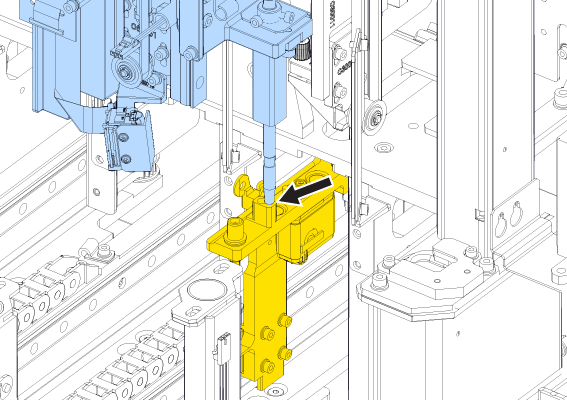
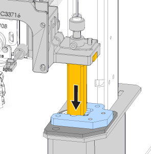
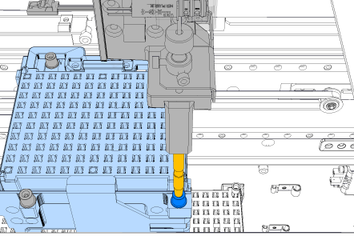
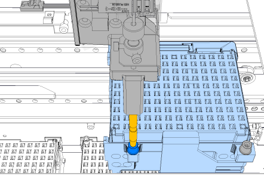

This topic includes information about how to align the precision sample pipettor.
Safety Reminder
Servicing the DxI 9000 instrument involves potential risks for pinch and puncture, electrical shock, and exposure to hazardous materials. You must mitigate these risks by taking appropriate countermeasures. See
Safety for more information.
Prerequisites
Before you begin an alignment procedure:
If you must make changes to the instrument's hardware, you must complete those changes before you prepare the instrument for adjustments and alignments.
You must verify that alignments have previously been completed on the instrument. To verify, in the Machine Control App go to
Menu > Prototype Alignment to open the Prototype Alignment page and to verify the
Finalize Instrument Alignments button is
GRAY in color. If the button is
BLUE in color, do not complete this procedure. Instead, you must first complete manual alignments.
You must first initialize the instrument to a
GREEN (Ready) status to ensure all subsystems have been successfully initialized and homed. You must then enter the instrument into a
BLUE (Maintenance) status.
Additional Requirements
Important: After you align the precision sample pipettor, you must calibrate the camera, check the collision sensor, and complete verification. See the following topics for more information:
Note: If the instrument enters into a
RED (Stopped) status:
Verify the interlock switch is in the correct position.
Be sure you are signed in to use the BeckmanAdmin account.
In the Console App go to
Menu > Tools > Diagnostics > Intrusive Diagnostics and select
Start Session.
Complete all troubleshooting, adjustments, manual alignments, and maintenance necessary to be able to initialize the instrument to a
GREEN (Ready) status.
Select the
SYSTEM RUNNING button and go to
Stop > Pause to enter the instrument into a
YELLOW (Paused) status.
Aligning the Precision Sample Pipettor to the Reaction Build Carriage (Reagent Shuttle)
Perform this procedure to align the precision sample pipettor to the reaction build carriage (the reagent shuttle).
Note: Be sure there is no tip present on the precision sample pipettor mandrel; if present, remove and discard.
In the Console App go to
Menu > Tools > Diagnostics > Intrusive Diagnostics and select
Start Session.
In the Machine Control App go to
Menu > Prototype Alignment to open the Prototype Alignment page.
Go to
Precision Sample Pipettor > Precision Sample Pipettor to Reaction Build Carriage # where "#" corresponds to the desired reaction build carriage (1-4).
Caution: If it is available, DO NOT select (RBCJig)Precision Sample Pipettor to Reaction Build Carriage, which is a prior alignment method.
Select
Home All.
Select
Disable All.
Manually move the pipettor and reagent carriage so that the mandrel tip rests on top of the reagent carriage platform next to (but not in) the depression.
Warning: DO NOT grab the mandrel and move it directly. Use the idler pulley and belt to move the mandrel.
Caution: Do not compress the mandrel. It should gently rest on the top of the reagent carriage platform without compressing the collision detect feature.
Figure 334:

Select
Refresh to display the value for the
Last Known Position for the Z-axis motor. Make note of the value and label it
Z-axis Last Known Position.
Manually move the mandrel tip over the alignment depression.
Select
Refresh to display the values for the
Last Known Position for the X-axis motor and for the reaction build carriage. Type the values into the corresponding
Alignment Value boxes.
Select
Save All.
Select
Auto Align to begin the auto-alignment.
Compare the new step count/position for the Z-axis motor with the
Z-axis Last Known Position value you made note of. The difference between the two values should be no more than 30 steps.
If the difference between the new step count/position for the Z-axis motor and the
Z-axis Last Known Position value you made note of is more than 30 steps, inspect and clean the mandrel for a clog and repeat the alignment. If an error message is displayed, review the next two bullet points and troubleshoot accordingly.
If one of the following error messages related to failure of X- or Y-axis auto-alignment is displayed, repeat the alignment up to three times. If the error messages persist, investigate other potential causes for the failure (e.g. failed collision sensor, collision plate, etc.).
Sample Pipettor auto alignment: Collision sensor is not working normally
Sample Pipettor auto alignment: The collision position exceeds the limitation
Sample Pipettor auto alignment: The location exceeding a threshold value was not found
Sample Pipettor auto alignment: The starting position is wrong. Re-adjust the center of the mandrel and the alignment point and retry auto-alignment.
Sample Pipettor auto alignment: The current position exceeds the range.
If the one of the following error messages related to failure of Z-axis auto-alignment (level sense) are displayed, inspect and clean the mandrel for a clog and repeat the alignment up to three times. If the error message persists, investigate other potential causes for the failure, such as the syringe manifold, pressure sensor printed circuit board (PCB), etc.
Sample Pipettor auto alignment: Level sense function is not working normally
Sample Pipettor auto alignment: Sample pipettor failed during DoLevelSense operations ... Sample pipettor failed to collision event
The notification
Save successful will be displayed when the alignment has successfully completed. Select
OK.
After the alignment has been saved, verify that the alignment is good by selecting
Move To Position. The mandrel should not go fully into the alignment depression.
Repeat alignment for additional reagent carriages as needed.
Aligning the Precision Sample Pipettor to the SPU Presentation Shuttle
Perform this procedure to align the precision sample pipettor to the SPU presentation shuttle.
In the Console App go to
Menu > Tools > Diagnostics > Intrusive Diagnostics and select
Start Session.
In the Machine Control App go to
Menu > Prototype Alignment to open the Prototype Alignment page.
Go to
Precision Sample Pipettor > Precision Sample Pipettor to SPU.
Note: Make sure there is no tip on the mandrel before moving it into position.
Select
Move to Position. The pipettor and SPU presentation shuttle should both move and the mandrel tip should now be seated in the alignment recess at the rear of the shuttle.
Figure 335:
Select
Disable All and be sure the tip of the mandrel is seated flush within the alignment recess.
Warning: DO NOT grab the mandrel and move it directly. Use the idler pulley and belt to move the mandrel.
Select
Measure All. The sample pipettor and carriage should return to their home positions.
Select
Save All to save the alignments.
Select
Move to Position. Verify that the mandrel is now aligned with the shuttle alignment recess.
Aligning the Precision Sample Pipettor to the Solid Waste Chute
Perform this procedure to align the precision sample pipettor to the solid waste chute.
In the Console App go to
Menu > Tools > Diagnostics > Intrusive Diagnostics and select
Start Session.
In the Machine Control App go to
Menu > Prototype Alignment to open the Prototype Alignment page.
Go to
Precision Sample Pipettor > Precision Sample Pipettor to Tip Solid Waste.
Note: Make sure there is no tip on the mandrel before moving it into position.
Select
Move to Position. The pipettor should move and the mandrel and white housing should now be seated in the alignment recess at the top of the tip waste chute.
Figure 336:

Select
Disable All. Be sure the white housing of the mandrel is seated flush within the alignment recess.
Warning: DO NOT grab the mandrel and move it directly. Use the idler pulley and belt to move the mandrel. While moving the pipettor up and down with the pulley, confirm the mandrel does not move in the X or Y direction while contacting the alignment recess.
Select
Measure All. The sample pipettor should return to its home position.
Select
Save All to save the alignments.
Select
Move to Position. Verify the mandrel is now aligned with the tip solid waste chute.
Aligning the Precision Sample Pipettor to the Tip Supply Tray Carrier
Perform this procedure to align the precision sample pipettor to the tip supply tray carrier.
In the Console App go to
Menu > Tools > Diagnostics > Intrusive Diagnostics and select
Start Session.
In the Machine Control App go to
Menu > Prototype Alignment to open the Prototype Alignment page.
Go to
Precision Sample Pipettor > Precision Sample Pipettor to Tip Supply - Bottom Left..
Note: Make sure there is no tip on the mandrel before moving it into position.
Select
Move to Position. The pipettor and carrier should both move and the mandrel tip should now be seated in the alignment pin recess on the carrier.
Figure 337:

Select
Disable All. Be sure the tip of the mandrel is seated flush within the alignment pin.
Warning: DO NOT grab the mandrel and move it directly. Use the idler pulley and belt to move the mandrel. While moving the pipettor up and down with the pulley, confirm the mandrel does not move in the X or Y direction while contacting the alignment pin.
Select
Measure All. The sample pipettor and carrier should return to their home positions.
Select
Save All to save the alignments.
Select
Move to Position. Verify that the mandrel is now aligned with the carrier alignment pin.
Select
Home All.
Repeat this procedure for the following additional alignment locations:
Figure 338: Precision Sample Pipettor to Tip Supply - Top Left

Figure 339: Precision Sample Pipettor to Tip Supply - Top Right
 to display the value for the
Last Known Position for the Z-axis motor. Make note of the value and label it
Z-axis Last Known Position.
to display the value for the
Last Known Position for the Z-axis motor. Make note of the value and label it
Z-axis Last Known Position.